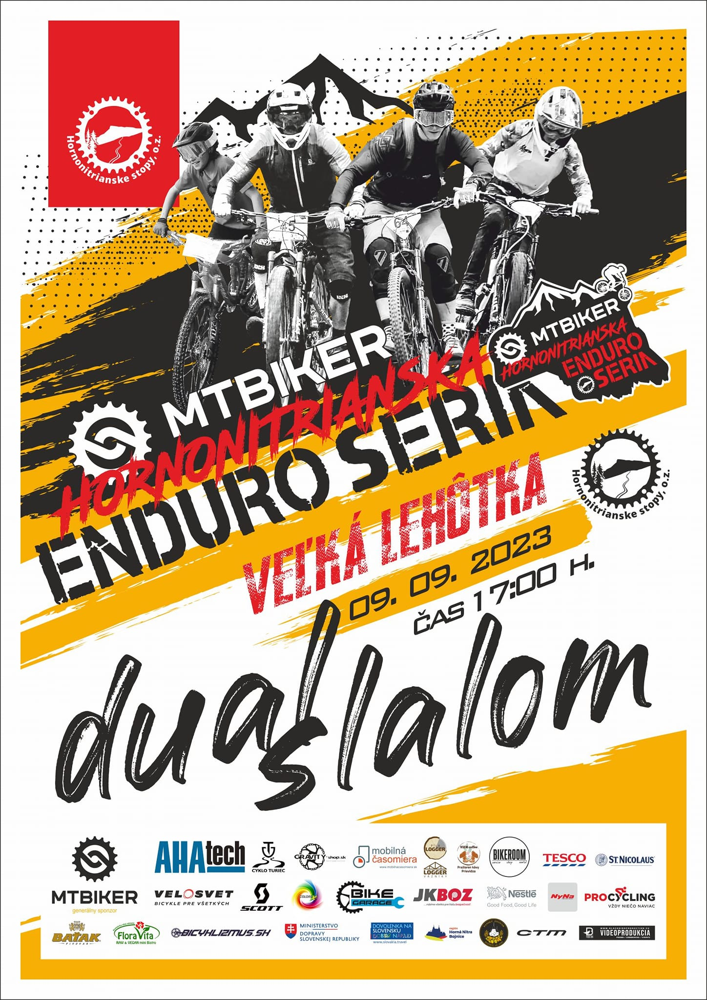
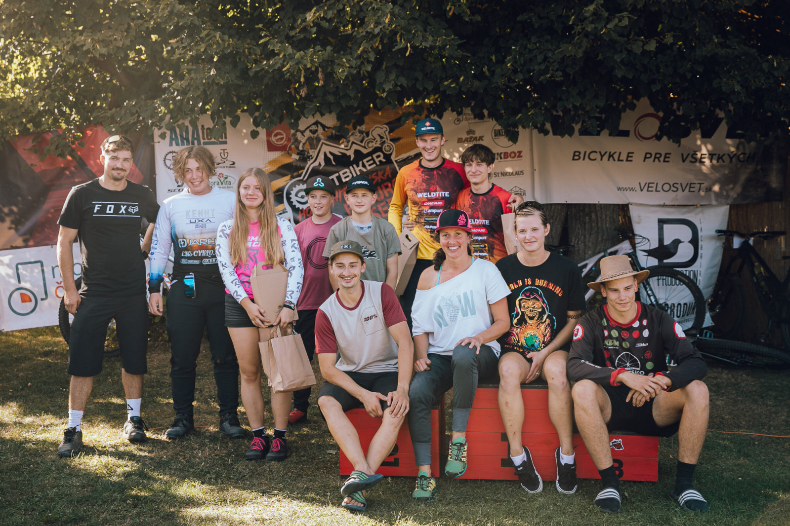
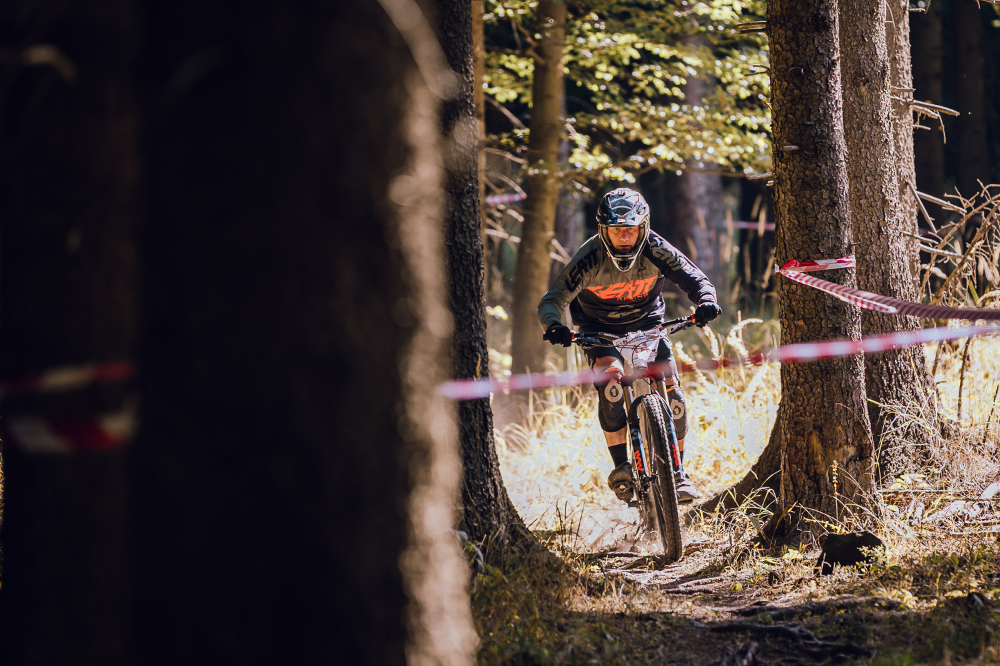
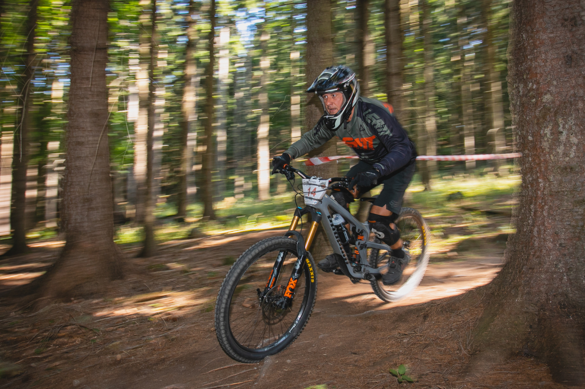
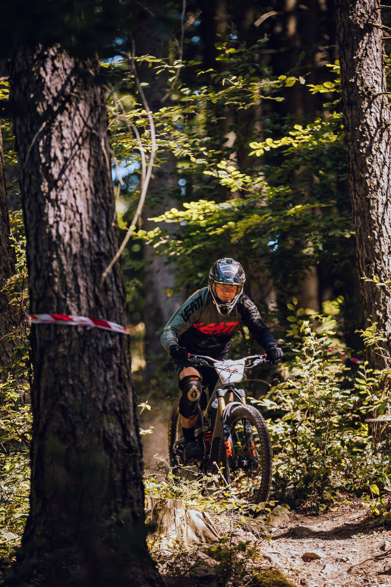

Teplý víkend bez dažďa s výborne pripravnými traťami.
Jazdil som s SPD tretrami a už to bolo menej ustráchané ako v Partizánskom.
Časy na RS1 a RS2 boli lepšie ako minulý rok napriek stále opatrnej jazde. Množstvo koreňov a kameňov ma poriadne vydrncalo, ale napriek suchému počasiu ma nevynášalo z trate (pravdepodobne aj vďaka relatívne pomalej jazde)
V treťej RS mi už ale chýbala energia potrebná aj na výšľapy v tejto RS a výsledný čas na tejto RS bol sklamaním. Chýbala akákoľvek výkonová rezerva bez ktorej nie je možný lepší výsledok.
V porovnaní s minulým rokom boli prvé dve RS rýchlejšie, ale v trojke už chýbali sily 😒.
Fotky z preteku




